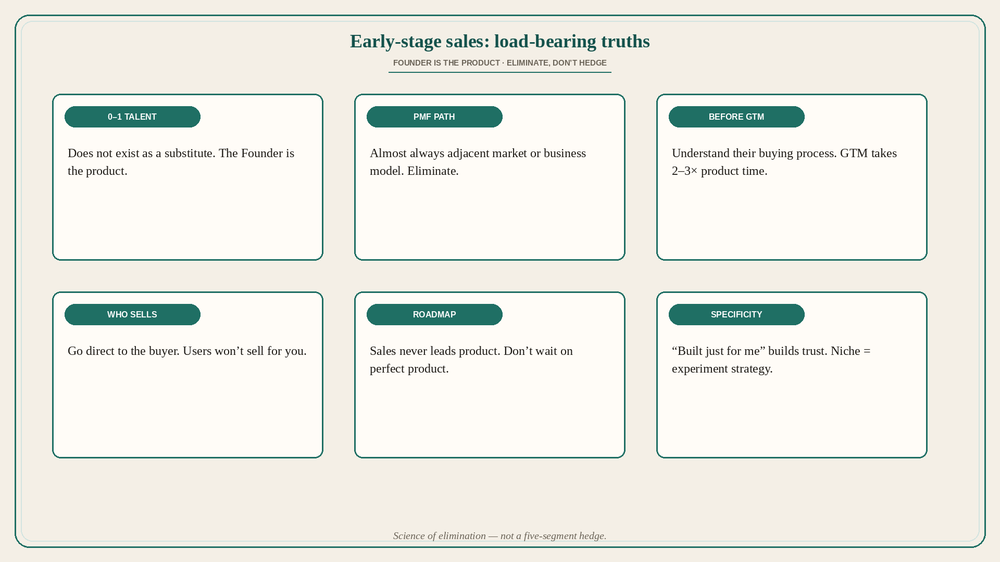

Early sales: founder is the product; PMF by elimination, not hedge
Source: Jen Abel (@jjen_abel)
original post
What it claims
Twenty-five less-obvious early-stage sales learnings from the last couple of years, including: (1) 0–1 sales talent does not exist — early on the Founder is the product. (2) PMF is almost always found in an adjacent market or business model — do not handcuff to Day-1 vision. (3) Understand their buying process before you build/define GTM. (4) Unlocking PMF is elimination (like science), not a hedge. (5) If the problem is not measured or managed, it is likely not a priority. (6) Specificity builds trust fastest (“built just for me”). (7) Quality of your questions = discovery; quality of theirs = intent. (8) Niche is a GTM experiment strategy, not a random start. (9) Working GTM takes 2–3× longer than working product. (10) Expect ~24 months as Head of Sales. (11) Consistency + controlled conversation experiments unlock repeatable themes. (12) ~80% of early sales is excitement about you — vision and how you uniquely solve their problem today. (13) No VP Sales at seed. (14) Channel partnerships waste time if you have not won direct. (15) Traction abroad seldom advances you in the U.S.; it often requires unlearning. (16) In red oceans, if primary need is over-served, focus on secondary need. (17) Feature-askers are almost never early adopters — test unproven partners with easy/lightweight. (18) Sales should never lead the roadmap. (19) SMB is not easier than enterprise. (20) Never expect the user to sell to the buyer — go direct; users can be blockers. (21) If you did not co-write the RFP, you are likely a checkbox. (22) Enterprise deals are about expansion multiples YoY. (23) In enterprise, deals often “close” via text. (24) Do not wait on product to go to market. (25) Do not overshare — it kills imagination, especially in outbound.
Why it matters for a PO
A PO in 0–1 or new-market expansion who hires “sales talent” to invent PMF, hedges five segments, or lets sales write the roadmap is fighting these lessons. Founder (or PO) as the product, elimination over hedge, buying-process-before-GTM, and direct-to-buyer are product strategy — not only sales craft.
3 takeaways
- 0–1: the Founder is the product; 0–1 sales talent does not exist as a substitute; plan ~24 months as Head of Sales; no seed VP Sales.
- PMF is found by elimination (often adjacent market/model), not by hedging Day-1 vision; niche is an experiment strategy; specificity builds trust.
- Learn buying process before GTM; GTM takes 2–3× product time; go direct to the buyer; sales does not own the roadmap; do not wait on product to sell.
Practice this week
Pick one segment you are hedging. Design one controlled conversation experiment this week that could kill or promote it. Write the buyer’s process in five steps before you add a “GTM playbook” story. Remove one roadmap item that only exists because sales asked for a feature tour. Cut one outbound note that overshares.